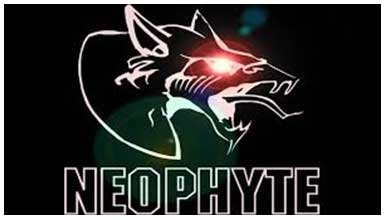

Hackers can be classified into different categories such as white hat, black hat, and grey hat, based on their intent of hacking a system. These different terms come from old Spaghetti Westerns, where the bad guy wears a black cowboy hat and the good guy wears a white hat.
White Hat hackers are also known as Ethical Hackers. They never intent to harm a system, rather they try to find out weaknesses in a computer or a network system as a part of penetration testing and vulnerability assessments.
Black Hat hackers, also known as crackers, are those who hack in order to gain unauthorized access to a system and harm its operations or steal sensitive information.
Black Hat hacking is always illegal because of its bad intent which includes stealing corporate data, violating privacy, damaging the system, blocking network communication, etc.
Grey hat hackers are a blend of both black hat and white hat hackers. They act without malicious intent but for their fun, they exploit a security weakness in a computer system or network without the owner’s permission or knowledge. Their intent is to bring the weakness to the attention of the owners and getting appreciation or a little bounty from the owners.
Apart from the above well-known classes of hackers, we have the following categories of hackers based on what they hack and how they do it:
Red hat hackers are again a blend of both black hat and white hat hackers. They are usually on the level of hacking government agencies, top-secret information hubs, and generally anything that falls under the category of sensitive information. Ethical Hacking
A blue hat hacker is someone outside computer security consulting firms who is used to bug-test a system prior to its launch. They look for loopholes that can be exploited and try to close these gaps. Microsoft also uses the term BlueHat to represent a series of security briefing events.
This is a social status among hackers, which is used to describe the most skilled. Newly discovered exploits will circulate among these hackers.
A script kiddie is a non-expert who breaks into computer systems by using pre-packaged automated tools written by others, usually with little understanding of the underlying concept, hence the term Kiddie.
A neophyte, "n00b", or "newbie" or "Green Hat Hacker" is someone who is new to hacking or phreaking and has almost no knowledge or experience of the workings of technology and hacking.
A hacktivist is a hacker who utilizes technology to announce a social, ideological, religious, or political message. In general, most hacktivism involves website defacement or denial-of-service attacks.